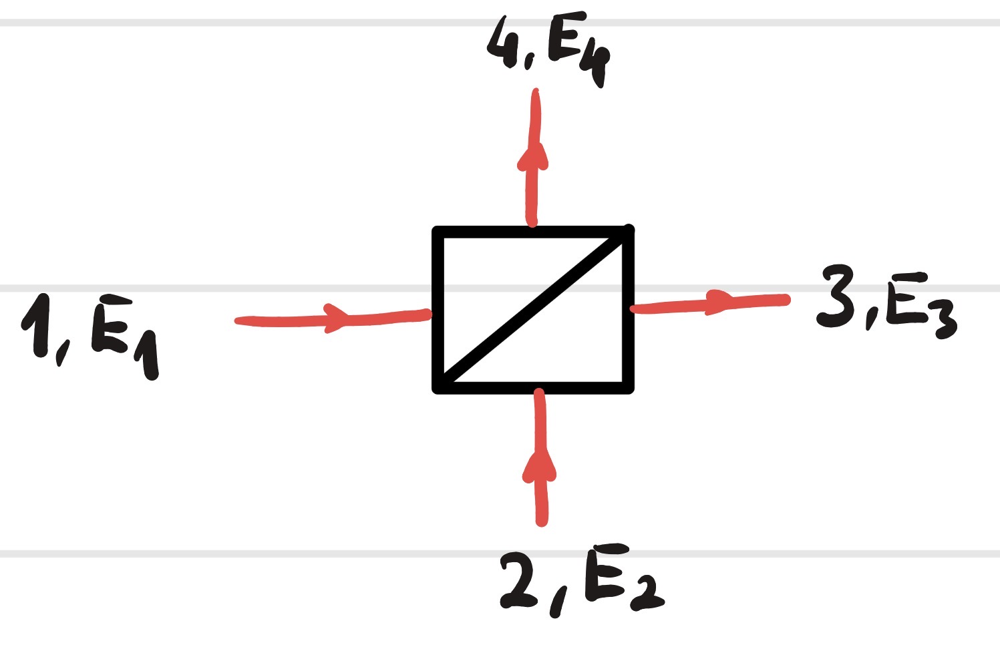
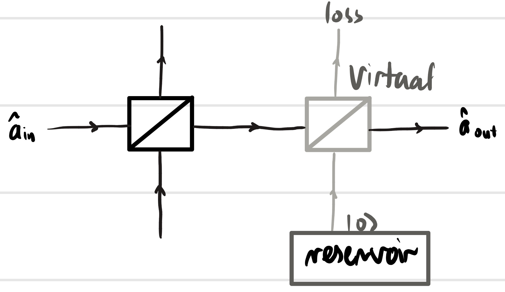
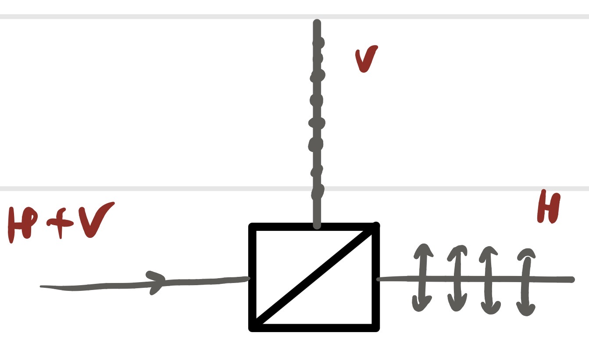
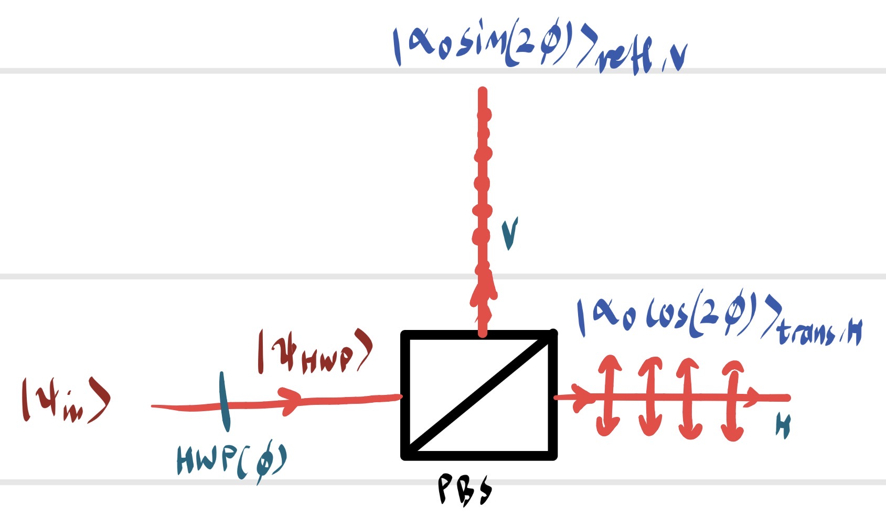
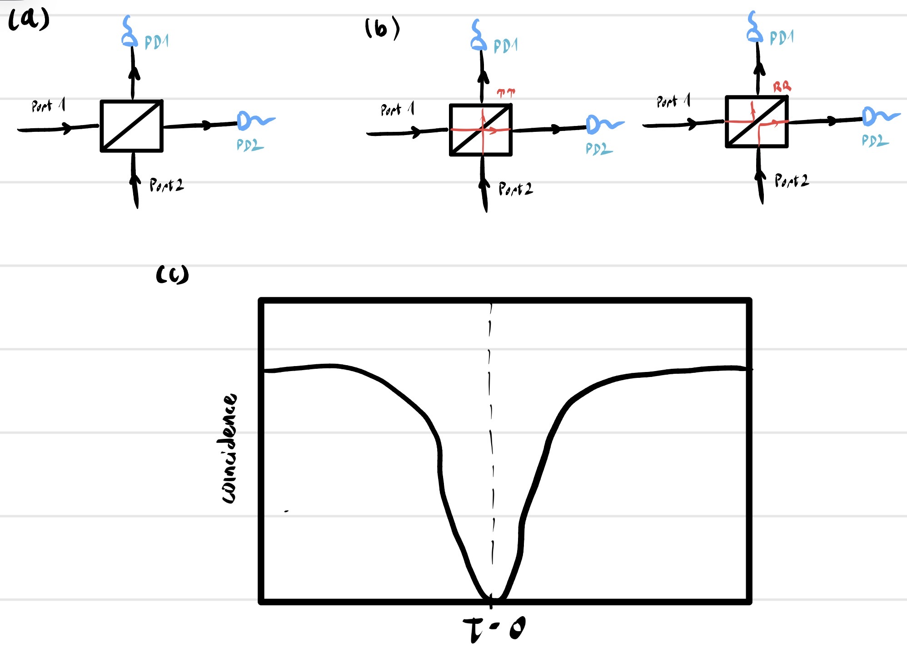

Introduction
The beam splitter is a fundamental optical element that divides an incident beam into transmitted and reflected components. In classical optics, it is described entirely by reflectance and transmittance coefficients. In quantum optics, however, the beam splitter becomes a unitary transformation of the electromagnetic field that couples the input and output modes. The presence of an unused input port—even when it contains only vacuum—introduces quantum fluctuations that fundamentally limit interferometric sensitivity and enable non-classical phenomena such as Hong–Ou–Mandel interference.
1. The Classical Lossless Beam Splitter
1.1 Geometry, Ports, and Field Amplitudes
Consider a lossless beam splitter as a four-port device with two input ports (labeled 1 and 2) and two output ports (labeled 3 and 4), as shown in Figure 1. The ports are single-mode optical channels—for instance, the guided modes of optical fibers or the Gaussian beams of free-space optics. At each port, the electromagnetic field is characterized by a complex phasor amplitude $E_i$ (for classical fields) or an annihilation operator $\hat{a}_i$ (for quantum fields). The phasor amplitude is defined such that the optical power carried by the beam is $P_i = \frac{1}{2}\varepsilon_0 c A |E_i|^2$, where $A$ is the effective mode area. In the quantum case, the photon flux is proportional to $\langle \hat{a}_i^\dagger \hat{a}_i \rangle$.
The beam splitter is assumed to be linear, meaning that the output fields are linear combinations of the input fields. It is also assumed to be reciprocal (the transmission is the same in both directions) and, for now, lossless. The device is characterized by its power reflection coefficient $R$ and power transmission coefficient $T$, with \begin{equation} R + T = 1. \label{eq:R_T} \end{equation}

[Figure 1: The beam splitter as a four-port device. Input ports 1 and 2; output ports 3 and 4. The scattering matrix relates the complex field amplitudes or annihilation operators at the output ports to those at the input ports.]1.2 The Scattering Matrix and Energy Conservation
The linear relation between input and output fields is expressed by a $2 \times 2$ scattering matrix $\mathbf{S}$: \begin{equation} \begin{pmatrix} E_3 \\ E_4 \end{pmatrix} = \mathbf{S} \begin{pmatrix} E_1 \\ E_2 \end{pmatrix}, \qquad \mathbf{S} = \begin{pmatrix} s_{31} & s_{32} \\ s_{41} & s_{42} \end{pmatrix}. \label{eq:scattering_def} \end{equation} The physical interpretation of the matrix elements is:
- $s_{31}$: amplitude transmission from port 1 to port 3,
- $s_{41}$: amplitude reflection from port 1 to port 4,
- $s_{32}$: amplitude reflection from port 2 to port 3,
- $s_{42}$: amplitude transmission from port 2 to port 4.
Energy conservation demands that the total output power equals the total input power for any input fields $E_1, E_2$: \begin{equation} |E_3|^2 + |E_4|^2 = |E_1|^2 + |E_2|^2 \quad \forall\, E_1, E_2. \label{eq:power_cons} \end{equation} Substituting (\ref{eq:scattering_def}) into (\ref{eq:power_cons}) and using the arbitrariness of $E_1$ and $E_2$, one finds that the scattering matrix must be unitary: \begin{equation} \mathbf{S}^\dagger \mathbf{S} = \mathbf{S} \mathbf{S}^\dagger = \mathbb{1}. \label{eq:unitarity} \end{equation} Writing out the conditions explicitly: \begin{align} |s_{31}|^2 + |s_{41}|^2 &= 1, \label{eq:col1} \\ |s_{32}|^2 + |s_{42}|^2 &= 1, \label{eq:col2} \\ s_{31}^* s_{32} + s_{41}^* s_{42} &= 0. \label{eq:orthog} \end{align} Equations (\ref{eq:col1})–(\ref{eq:col2}) state that the columns of $\mathbf{S}$ are normalized; Eq. (\ref{eq:orthog}) states that they are orthogonal. The most general $2 \times 2$ unitary matrix can be parameterized as \begin{equation} \mathbf{S} = e^{i\Phi} \begin{pmatrix} \cos\theta \, e^{i\phi_t} & \sin\theta \, e^{i\phi_r} \\ -\sin\theta \, e^{-i\phi_r} & \cos\theta \, e^{-i\phi_t} \end{pmatrix}, \end{equation} where $\Phi$ is a global phase, $\theta$ determines the splitting ratio ($\cos^2\theta = T$, $\sin^2\theta = R$), and $\phi_t, \phi_r$ are relative phases.
1.3 The Symmetric Beam Splitter and Phase Conventions
We now specialize to the symmetric beam splitter, for which the two input ports are physically equivalent. This means that the transmission amplitude is the same regardless of which input port is used, and similarly for the reflection amplitude. In terms of the scattering matrix elements, $s_{31} = s_{42}$ and $s_{41} = s_{32}$. The unitarity conditions then reduce to: \begin{align} |t|^2 + |r|^2 &= 1, \label{eq:power_split} \\ t^* r + r^* t &= 2\operatorname{Re}(t^* r) = 0, \label{eq:phase_orthog} \end{align} where we have set $t \equiv s_{31} = s_{42}$ and $r \equiv s_{41} = s_{32}$. Equation (\ref{eq:phase_orthog}) requires that $t$ and $r$ be $\pm \pi/2$ out of phase. The standard convention, which we adopt throughout, is to take $t$ real and positive and $r$ purely imaginary with a positive imaginary part: \begin{equation} \boxed{t = \sqrt{T}, \qquad r = i\sqrt{R}}. \label{eq:standard_phases} \end{equation} The scattering matrix for the symmetric, lossless beam splitter is therefore \begin{equation} \boxed{\mathbf{S}_{\text{BS}} = \begin{pmatrix} \sqrt{T} & i\sqrt{R} \\ i\sqrt{R} & \sqrt{T} \end{pmatrix}}. \label{eq:S_matrix_final} \end{equation} The physical origin of the $i$ factor on the reflection coefficients is the $\pi/2$ phase shift that light acquires upon reflection from a medium of lower refractive index (as in a dielectric beam splitter). This phase shift is crucial: it is responsible for the complementary outputs of a Mach–Zehnder interferometer and for the destructive interference in the Hong–Ou–Mandel effect.
It is worth pausing to note that the choice of phases is, to some extent, a convention. One could equally well take $t = \sqrt{T}$ and $r = -i\sqrt{R}$ (the complex conjugate), which would swap the roles of constructive and destructive interference ports. What is not conventional is the $\pm \pi/2$ phase difference between transmission and reflection; this is a physical consequence of unitarity and the symmetry of the device.
1.4 The 50:50 Beam Splitter
The most important special case is the 50:50 beam splitter, for which $R = T = 1/2$. The scattering matrix is \begin{equation} \boxed{\mathbf{S}_{50:50} = \frac{1}{\sqrt{2}} \begin{pmatrix} 1 & i \\ i & 1 \end{pmatrix}}. \label{eq:50_50} \end{equation} This symmetric, balanced device is the workhorse of quantum optics. It is used in the Hong–Ou–Mandel interferometer, in balanced homodyne detection, in the generation of path-entangled NOON states, and in countless other experiments. Its simple matrix form makes it the ideal testbed for exploring the quantum properties of linear optical networks.
1.5 Input–Output Relations in Terms of Powers
Using (\ref{eq:S_matrix_final}), the output fields in terms of the input fields are \begin{align} E_3 &= \sqrt{T} \, E_1 + i\sqrt{R} \, E_2, \label{eq:E3} \\ E_4 &= i\sqrt{R} \, E_1 + \sqrt{T} \, E_2. \label{eq:E4} \end{align} The output intensities are \begin{align} I_3 &= T I_1 + R I_2 - 2\sqrt{TR} \,\operatorname{Im}(E_1 E_2^*), \label{eq:I3_classical} \\ I_4 &= R I_1 + T I_2 + 2\sqrt{TR} \,\operatorname{Im}(E_1 E_2^*). \label{eq:I4_classical} \end{align} The interference term $\operatorname{Im}(E_1 E_2^*)$ depends on the relative phase of the two input fields. For inputs that are in phase ($E_1$ and $E_2$ real and positive), there is no interference in the intensities (the $\operatorname{Im}$ term vanishes). For inputs with a $\pi/2$ phase difference, the interference is maximal. This phase sensitivity is the basis of homodyne detection: by mixing a weak signal with a strong local oscillator, one can measure the signal's quadrature amplitudes with quantum-limited sensitivity.
2. The Quantum Beam Splitter
2.1 Field Operators and Unitary Transformation
In the quantum description, the classical field amplitudes are replaced by annihilation operators $\hat{a}_i$ for the corresponding spatial modes. The beam splitter, being a linear, lossless device, must implement a unitary transformation on these operators. The natural quantization of the classical scattering matrix (\ref{eq:S_matrix_final}) is \begin{equation} \boxed{\begin{pmatrix} \hat{a}_3 \\ \hat{a}_4 \end{pmatrix} = \mathbf{S}_{\text{BS}} \begin{pmatrix} \hat{a}_1 \\ \hat{a}_2 \end{pmatrix} = \begin{pmatrix} \sqrt{T} & i\sqrt{R} \\ i\sqrt{R} & \sqrt{T} \end{pmatrix} \begin{pmatrix} \hat{a}_1 \\ \hat{a}_2 \end{pmatrix}}. \label{eq:quantum_S} \end{equation} Because $\mathbf{S}_{\text{BS}}$ is unitary, the transformation preserves the canonical commutation relations: \begin{align} [\hat{a}_3, \hat{a}_3^\dagger] &= T [\hat{a}_1, \hat{a}_1^\dagger] + R [\hat{a}_2, \hat{a}_2^\dagger] = T + R = 1, \\ [\hat{a}_4, \hat{a}_4^\dagger] &= R [\hat{a}_1, \hat{a}_1^\dagger] + T [\hat{a}_2, \hat{a}_2^\dagger] = R + T = 1, \\ [\hat{a}_3, \hat{a}_4^\dagger] &= \sqrt{T} (-i\sqrt{R}) [\hat{a}_1, \hat{a}_1^\dagger] + i\sqrt{R} \sqrt{T} [\hat{a}_2, \hat{a}_2^\dagger] = -i\sqrt{TR} + i\sqrt{TR} = 0. \end{align} The cross-commutators between output ports vanish, confirming that $\hat{a}_3$ and $\hat{a}_4$ represent independent bosonic modes. This is the fundamental quantum-mechanical statement that the beam splitter is a passive linear optical element.
2.2 The Beam Splitter Unitary Operator
The transformation (\ref{eq:quantum_S}) can be expressed as a unitary evolution in the Heisenberg picture: \begin{equation} \hat{a}_3 = \hat{U}_{\text{BS}}^\dagger \hat{a}_1 \hat{U}_{\text{BS}}, \qquad \hat{a}_4 = \hat{U}_{\text{BS}}^\dagger \hat{a}_2 \hat{U}_{\text{BS}}. \end{equation} The explicit form of the unitary operator is \begin{equation} \boxed{\hat{U}_{\text{BS}} = \exp\!\big[ i\theta (\hat{a}_1^\dagger \hat{a}_2 + \hat{a}_2^\dagger \hat{a}_1) \big]}, \label{eq:U_BS} \end{equation} where the mixing angle $\theta$ is related to the splitting ratio by \begin{equation} \cos\theta = \sqrt{T}, \qquad \sin\theta = \sqrt{R}. \end{equation} For a 50:50 beam splitter, $\theta = \pi/4$.
To verify that (\ref{eq:U_BS}) generates the correct transformation, we can use the Baker–Campbell–Hausdorff formula. Define the Hermitian generator $\hat{G} = \hat{a}_1^\dagger \hat{a}_2 + \hat{a}_2^\dagger \hat{a}_1$. The commutators are \begin{align} [\hat{G}, \hat{a}_1] &= -\hat{a}_2, \\ [\hat{G}, \hat{a}_2] &= -\hat{a}_1. \end{align} The Heisenberg evolution gives \begin{align} \hat{U}_{\text{BS}}^\dagger \hat{a}_1 \hat{U}_{\text{BS}} &= e^{-i\theta\hat{G}} \hat{a}_1 e^{i\theta\hat{G}} \nonumber \\ &= \hat{a}_1 + (-i\theta)[\hat{G}, \hat{a}_1] + \frac{(-i\theta)^2}{2!} [\hat{G}, [\hat{G}, \hat{a}_1]] + \cdots \nonumber \\ &= \hat{a}_1 \cos\theta + i\hat{a}_2 \sin\theta \nonumber \\ &= \sqrt{T} \hat{a}_1 + i\sqrt{R} \hat{a}_2, \end{align} exactly as required. A similar calculation gives $\hat{a}_4$.
The operator $\hat{G}$ is the $x$-component of the Schwinger angular momentum operator for two bosonic modes. Defining \begin{equation} \hat{J}_x = \frac{1}{2}(\hat{a}_1^\dagger \hat{a}_2 + \hat{a}_2^\dagger \hat{a}_1), \quad \hat{J}_y = \frac{1}{2i}(\hat{a}_1^\dagger \hat{a}_2 - \hat{a}_2^\dagger \hat{a}_1), \quad \hat{J}_z = \frac{1}{2}(\hat{a}_1^\dagger \hat{a}_1 - \hat{a}_2^\dagger \hat{a}_2), \end{equation} these operators satisfy the SU(2) commutation relations $[\hat{J}_i, \hat{J}_j] = i\varepsilon_{ijk} \hat{J}_k$. The beam splitter unitary is $\hat{U}_{\text{BS}} = e^{i 2\theta \hat{J}_x}$, a rotation in the abstract SU(2) space. This connection to angular momentum is not a mere mathematical curiosity; it underlies the formal analogy between polarization optics (the Poincaré sphere) and two-mode interferometry (the Bloch sphere for path-encoded qubits). The Stokes operators for polarization and the Schwinger operators for two spatial modes are mathematically identical.
2.3 The Unused Port: Vacuum Fluctuations and Shot Noise
A profound difference between classical and quantum beam splitter theory is the treatment of the "empty" input port. In classical optics, if no light is injected into port 2, we simply set $E_2 = 0$, and the outputs are $E_3 = \sqrt{T} E_1$, $E_4 = i\sqrt{R} E_1$. The output intensities are deterministic fractions of the input intensity.
In quantum optics, an "empty" port is not truly empty. It is occupied by the vacuum state $|0\rangle_2$. The operator $\hat{a}_2$ acting on $|0\rangle_2$ gives zero, so $\langle \hat{a}_2 \rangle = 0$, but the vacuum has non-zero fluctuations: $\langle \hat{a}_2^\dagger \hat{a}_2 \rangle = 0$, yet $\langle \hat{a}_2 \hat{a}_2^\dagger \rangle = 1$. These vacuum fluctuations enter through the beam splitter and contribute to the noise in the output.
Let an input coherent state $|\alpha\rangle_1$ enter port 1, and vacuum $|0\rangle_2$ enter port 2. The output operator for port 3 is \begin{equation} \hat{a}_3 = \sqrt{T} \hat{a}_1 + i\sqrt{R} \hat{a}_2. \end{equation} The mean photon number at output 3 is \begin{equation} \langle \hat{n}_3 \rangle = \langle \hat{a}_3^\dagger \hat{a}_3 \rangle = T \langle \hat{a}_1^\dagger \hat{a}_1 \rangle = T |\alpha|^2, \end{equation} which is the classical result. However, the variance is \begin{align} \langle \Delta \hat{n}_3^2 \rangle &= \langle \hat{n}_3^2 \rangle - \langle \hat{n}_3 \rangle^2 \nonumber \\ &= T^2 |\alpha|^4 + T|\alpha|^2 - (T|\alpha|^2)^2 \nonumber \\ &= T|\alpha|^2. \end{align} The variance equals the mean, which is the Poissonian shot noise of a coherent state. But note: if we had followed the classical prescription and simply multiplied the amplitude by $\sqrt{T}$, we would have obtained the same mean but would have had no way to calculate the noise. The quantum treatment reveals that the noise floor is set by the vacuum fluctuations entering through the unused port. This is the standard quantum limit (SQL) for intensity measurements. To beat the SQL, one must inject squeezed vacuum into the unused port—a technique now routinely used in gravitational wave detectors.
3. Coherent States Through a Beam Splitter
3.1 The Coherent State Transformation Rule
Coherent states occupy a special place in beam splitter theory because they transform in a particularly simple way. Consider an input state consisting of a coherent state in each input port: \begin{equation} |\psi_{\text{in}}\rangle = |\alpha\rangle_1 \otimes |\beta\rangle_2, \label{eq:two_coherent_in} \end{equation} where $|\alpha\rangle_1 = \hat{D}_1(\alpha) |0\rangle_1$ is a coherent state in mode 1 with complex amplitude $\alpha$, and similarly for mode 2. The beam splitter unitary (\ref{eq:U_BS}) acts on this state. Using the fact that the displacement operators transform under the beam splitter in the same way as the classical amplitudes, one finds the output state: \begin{equation} \boxed{\hat{U}_{\text{BS}} |\alpha\rangle_1 |\beta\rangle_2 = |\alpha\sqrt{T} + i\beta\sqrt{R}\rangle_3 \otimes |i\alpha\sqrt{R} + \beta\sqrt{T}\rangle_4}. \label{eq:coherent_output} \end{equation} The output is a product of two coherent states, with amplitudes given precisely by the classical scattering matrix acting on the input amplitudes. No entanglement is generated. The coherent state remains a coherent state.
To prove this, one can use the fact that a coherent state is an eigenstate of the annihilation operator: $\hat{a}_1 |\alpha\rangle_1 = \alpha |\alpha\rangle_1$. The beam splitter transforms the annihilation operators, so in the Heisenberg picture, the output state is an eigenstate of the output annihilation operators with eigenvalues given by the classical transformation. Alternatively, one can use the displacement operator representation: $\hat{U}_{\text{BS}} \hat{D}_1(\alpha) \hat{D}_2(\beta) \hat{U}_{\text{BS}}^\dagger$ produces displacement operators for the output modes with the transformed amplitudes.
3.2 Special Case: Single Coherent Input
If only port 1 is illuminated with a coherent state, and port 2 is vacuum ($\beta = 0$), the output is \begin{equation} \hat{U}_{\text{BS}} |\alpha\rangle_1 |0\rangle_2 = |\alpha\sqrt{T}\rangle_3 \otimes |i\alpha\sqrt{R}\rangle_4. \label{eq:single_coherent} \end{equation} The output is a product of two coherent states with reduced amplitudes. The mean photon numbers are $\langle \hat{n}_3 \rangle = T|\alpha|^2$ and $\langle \hat{n}_4 \rangle = R|\alpha|^2$. Both output beams are still coherent and Poissonian. This is why coherent states are sometimes called "pointer states" for linear loss: they do not become mixed or entangled under passive linear optics.
3.3 The Classical–Quantum Correspondence
Equation (\ref{eq:coherent_output}) establishes the classical–quantum correspondence for beam splitters. For coherent-state inputs, the quantum expectation values of the field operators $\langle \hat{a}_i \rangle$ evolve exactly according to the classical scattering matrix. The first-order coherence properties (intensities, interferometric visibilities) are identical to the classical predictions. This is a special case of the general result that Gaussian states remain Gaussian under Gaussian (linear) operations, and their first moments follow classical equations.
However, this correspondence is limited. It does not extend to:
- Second-order and higher correlations: The quantum theory correctly predicts shot noise and photon anti-bunching, which have no classical explanation.
- Non-classical input states: For Fock states, squeezed states, or entangled states, the beam splitter generates genuine quantum entanglement and non-classical correlations (e.g., Hong–Ou–Mandel interference).
- Loss and decoherence: The quantum treatment of loss via virtual beam splitters correctly describes the degradation of non-classical states.
4. The Lossy Beam Splitter
4.1 Why a Simple Attenuation Factor Fails
A realistic beam splitter is not perfectly lossless. Some fraction of the incident light is absorbed in the dielectric coatings, scattered at surface imperfections, or radiated into unwanted spatial modes. In classical optics, loss is modeled by multiplying the field amplitude by an attenuation factor $\sqrt{\eta} < 1$, so that $E_{\text{out}} = \sqrt{\eta} E_{\text{in}}$. The intensity is reduced by a factor $\eta$.
In quantum optics, this naive prescription is not allowed. Multiplying an annihilation operator by a scalar less than one would violate the canonical commutation relation: \begin{equation} [\sqrt{\eta}\hat{a}, \sqrt{\eta}\hat{a}^\dagger] = \eta [\hat{a}, \hat{a}^\dagger] = \eta \neq 1. \end{equation} The output operator would no longer describe a valid bosonic mode. Loss cannot be described by a non-unitary transformation on the mode alone; one must introduce additional degrees of freedom (the loss channels) to preserve the commutation relations.
4.2 The Virtual Beam Splitter Model
The standard quantum optical model for loss is to couple the mode of interest to a reservoir mode through a virtual beam splitter, as shown in Figure 2. The reservoir mode represents the continuum of electromagnetic modes into which the lost light is scattered. The reservoir is initially in the vacuum state (if we consider loss at zero temperature) or in a thermal state (for finite-temperature loss).
Let the input mode be $\hat{a}_{\text{in}}$, and let $\hat{a}_{\text{loss}}$ be the annihilation operator of the reservoir mode. The virtual beam splitter has intensity transmission $\eta$ (the efficiency) and reflection $1-\eta$. The output mode—the one that continues to the detector—is the transmitted part: \begin{equation} \boxed{\hat{a}_{\text{out}} = \sqrt{\eta} \, \hat{a}_{\text{in}} + i\sqrt{1-\eta} \, \hat{a}_{\text{loss}}}. \label{eq:lossy_BS} \end{equation} The reflected part $\hat{a}_{\text{dump}} = i\sqrt{1-\eta} \, \hat{a}_{\text{in}} + \sqrt{\eta} \, \hat{a}_{\text{loss}}$ carries the lost light into the environment and is not observed. One easily checks that \begin{equation} [\hat{a}_{\text{out}}, \hat{a}_{\text{out}}^\dagger] = \eta + (1-\eta) = 1, \end{equation} so the commutation relation is preserved. The price is that the output mode is now coupled to an unobserved degree of freedom, and when we trace out the loss mode, the system mode becomes mixed.

[Figure 2: The lossy beam splitter modeled as a virtual beam splitter(gray) coupling the signal mode to a reservoir mode (initially in the vacuum state). The output is the transmitted part; the reflected part is lost to the environment. This model preserves the bosonic commutation relations.]4.3 Effect on Coherent States and Single-Photon States
For a coherent-state input $|\alpha\rangle_{\text{in}}$ and vacuum in the loss mode, the output state (before tracing out the loss mode) is a two-mode coherent state. Tracing out the loss mode leaves the system in a pure coherent state with reduced amplitude: \begin{equation} \hat{\rho}_{\text{out}} = |\sqrt{\eta}\alpha\rangle\langle \sqrt{\eta}\alpha|. \end{equation} Coherent states are not degraded into mixed states by linear loss. This is a special property: coherent states are the "pointer states" for photon loss, robust against decoherence from linear attenuation.
For a single-photon Fock state $|1\rangle_{\text{in}}$, the situation is different. The input state is $|1\rangle_{\text{in}} |0\rangle_{\text{loss}} = \hat{a}_{\text{in}}^\dagger |0\rangle$. After the virtual beam splitter, the output state (before tracing) is an entangled state of the output mode and the loss mode. Tracing out the loss mode yields a mixed state: \begin{equation} \hat{\rho}_{\text{out}} = \eta |1\rangle\langle 1| + (1-\eta) |0\rangle\langle 0|. \label{eq:single_photon_loss} \end{equation} The photon is transmitted with probability $\eta$ and lost with probability $1-\eta$. The state is no longer pure; its purity is $\operatorname{Tr}(\hat{\rho}^2) = \eta^2 + (1-\eta)^2 \le 1$. This is the fundamental challenge for quantum communication: loss degrades non-classical states and introduces decoherence.
4.4 General Loss in a Multi-Mode Network
The virtual beam splitter model generalizes to any linear optical network with loss. Each lossy element is replaced by an ideal unitary element plus a virtual beam splitter that couples to an environmental mode. The overall network remains unitary on the extended Hilbert space (system + environment). When the environment is traced out, the system evolves according to a completely positive, trace-preserving (CPTP) map—a quantum channel. This is the conceptual foundation for treating decoherence in quantum optical systems.
5. The Polarizing Beam Splitter (PBS)
5.1 Principle of Operation and Classical Description
A polarizing beam splitter (PBS) is a device that spatially separates two orthogonal polarization components of an incident light beam. An ideal PBS transmits horizontally polarized light (H) without deflection and reflects vertically polarized light (V) by 90$^\circ$, as shown in Figure 3. Unlike the non-polarizing beam splitter discussed in Sections 1–4, which mixes two spatial modes without regard to polarization, the PBS operates on the polarization degree of freedom and routes different polarizations to different spatial output ports.
In the classical Jones calculus, a PBS with a single input port (say, port A) and two output spatial ports acts as a pair of projection operators. If the input beam has the Jones vector \begin{equation} |J_{\text{in}}\rangle = \begin{pmatrix} E_H \\ E_V \end{pmatrix}, \end{equation} then the transmitted output (which we call spatial mode 3) contains only the H component, and the reflected output (spatial mode 4) contains only the V component: \begin{equation} |J_3\rangle = \begin{pmatrix} 1 & 0 \\ 0 & 0 \end{pmatrix} |J_{\text{in}}\rangle = \begin{pmatrix} E_H \\ 0 \end{pmatrix}, \qquad |J_4\rangle = \begin{pmatrix} 0 & 0 \\ 0 & 1 \end{pmatrix} |J_{\text{in}}\rangle = \begin{pmatrix} 0 \\ E_V \end{pmatrix}. \label{eq:PBS_projectors} \end{equation} The intensities at the two outputs are $I_3 = |E_H|^2$ and $I_4 = |E_V|^2$. The PBS has thus converted polarization information into spatial (path) information: by measuring which output port the light exits, one determines its polarization.

[Figure 3: The polarizing beam splitter (PBS). Horizontally polarized light (H, indicated by arrows in the plane) is transmitted. Vertically polarized light (V, indicated by dots) is reflected. The PBS acts as a polarization-to-path converter.]5.2 Full Four-Port Description of the PBS
A complete description of the PBS must account for both input spatial ports (A and B) and both output spatial ports (transmitted and reflected), with each port supporting two polarization modes (H and V). The PBS routes:
- H-polarized light from input A $\to$ transmitted output,
- V-polarized light from input A $\to$ reflected output,
- H-polarized light from input B $\to$ reflected output,
- V-polarized light from input B $\to$ transmitted output.
In terms of annihilation operators: \begin{align} \hat{a}_{H}^{\text{(out)}} &= \hat{a}_{H}^{\text{(in,A)}}, \qquad \hat{a}_{V}^{\text{(out)}} = \hat{a}_{V}^{\text{(in,B)}}, \label{eq:PBS_op1} \\ \hat{b}_{H}^{\text{(out)}} &= \hat{a}_{H}^{\text{(in,B)}}, \qquad \hat{b}_{V}^{\text{(out)}} = \hat{a}_{V}^{\text{(in,A)}}. \label{eq:PBS_op2} \end{align} Here, $\hat{a}^{\text{(out)}}$ denotes the transmitted output port, and $\hat{b}^{\text{(out)}}$ denotes the reflected output port. The superscripts $(in,A)$ and $(in,B)$ label the two input ports. This transformation is unitary on the four-mode Hilbert space (two spatial modes $\times$ two polarizations). It is essentially a polarization-controlled swap operation.
5.3 Coherent State Entering a PBS: Classical–Quantum Correspondence
Consider a single coherent state entering input port A of a PBS, with an arbitrary polarization state. The input is a two-mode (H and V polarization) coherent state in spatial mode A, plus vacuum in spatial mode B: \begin{equation} |\psi_{\text{in}}\rangle = |\alpha_H\rangle_{A,H} \otimes |\alpha_V\rangle_{A,V} \otimes |0\rangle_{B,H} \otimes |0\rangle_{B,V}. \label{eq:PBS_coherent_in} \end{equation} The amplitudes $\alpha_H$ and $\alpha_V$ are the complex coherent amplitudes for the two polarization components. Applying the PBS transformation (\ref{eq:PBS_op1})–(\ref{eq:PBS_op2}) to the coherent state is straightforward because the PBS is linear and lossless, and coherent states transform by having their amplitudes routed according to the classical rules. The output state is \begin{equation} \boxed{|\psi_{\text{out}}\rangle = |\alpha_H\rangle_{\text{trans}, H} \otimes |0\rangle_{\text{trans}, V} \otimes |0\rangle_{\text{refl}, H} \otimes |\alpha_V\rangle_{\text{refl}, V}}. \label{eq:PBS_coherent_out} \end{equation} The H-polarized component emerges from the transmitted port; the V-polarized component emerges from the reflected port. The two output beams are in product coherent states. The mean photon numbers are $\langle \hat{n}_{\text{trans}} \rangle = |\alpha_H|^2$ and $\langle \hat{n}_{\text{refl}} \rangle = |\alpha_V|^2$.
This is the quantum version of the classical statement that the PBS splits a beam into its H and V components. Because the input is a coherent state, the output remains a product of coherent states, and no entanglement is generated between the two output spatial modes. The PBS acting on a coherent state simply converts polarization coherence into a classical correlation between the intensities in the two output ports.
For non-classical inputs—for example, a single-photon state with diagonal polarization $(|1_H, 0_V\rangle + |0_H, 1_V\rangle)/\sqrt{2}$ entering port A—the PBS generates path–polarization entanglement. The output state is a superposition of a photon in the transmitted port with H polarization and a photon in the reflected port with V polarization: \begin{equation} |\psi_{\text{out}}\rangle = \frac{1}{\sqrt{2}} \big( |1_H\rangle_{\text{trans}} |0\rangle_{\text{refl}} + |0\rangle_{\text{trans}} |1_V\rangle_{\text{refl}} \big). \end{equation} This entangled state is a resource for quantum communication and computation protocols.
6. Half-Wave Plate Followed by a Polarizing Beam Splitter
6.1 Motivation: A Variable-Ratio Beam Splitter
One of the most common and useful configurations in polarization optics is a half-wave plate followed by a polarizing beam splitter, as shown in Figure 3. This combination forms a variable-ratio beam splitter: by rotating the HWP, one controls the relative amplitudes of the H and V polarization components incident on the PBS, and therefore controls the splitting ratio between the two PBS output ports. This is the standard method for continuously varying the power in two arms of an interferometer without introducing unwanted phase shifts or beam displacement. It is also the standard way to implement arbitrary amplitude control in polarization-encoded photonic quantum computing.
The configuration is: an input beam with a fixed linear polarization (typically horizontal, H) passes through a half-wave plate with its fast axis at an adjustable angle $\phi$, and then enters a PBS. The HWP rotates the polarization; the PBS separates the resulting H and V components into two distinct spatial paths. The intensities in the two output paths are controlled by $\phi$.

[Figure 3: A half-wave plate (HWP) followed by a polarizing beam splitter (PBS). The input is H-polarized light. The HWP at angle $\phi$ rotates the polarization. The PBS then separates the H and V components into the transmitted and reflected ports. By adjusting $\phi$, one controls the splitting ratio between the two output ports. This is a variable-ratio beam splitter.]6.2 Classical Jones Vector Analysis
Let the input beam be horizontally polarized: \begin{equation} |J_{\text{in}}\rangle = \begin{pmatrix} E_0 \\ 0 \end{pmatrix}, \end{equation} where $E_0$ is a real, positive amplitude (we can set $E_0 = 1$ for a normalized analysis). The beam first encounters the half-wave plate. The Jones matrix for a HWP with its fast axis at an angle $\phi$ relative to the horizontal is \begin{equation} \mathbf{W}_{\text{HWP}}(\phi) = \begin{pmatrix} \cos(2\phi) & \sin(2\phi) \\ \sin(2\phi) & -\cos(2\phi) \end{pmatrix}. \label{eq:HWP_Jones} \end{equation} Applying this to the input Jones vector: \begin{align} |J_{\text{HWP}}\rangle &= \mathbf{W}_{\text{HWP}}(\phi) \begin{pmatrix} E_0 \\ 0 \end{pmatrix} \nonumber \\ &= \begin{pmatrix} E_0 \cos(2\phi) \\ E_0 \sin(2\phi) \end{pmatrix}. \label{eq:after_HWP} \end{align} The HWP has rotated the initial H polarization into a linear polarization state at an angle $2\phi$ from the horizontal. The amplitude of the H component is $E_0 \cos(2\phi)$, and the amplitude of the V component is $E_0 \sin(2\phi)$.
This beam now enters the PBS. The PBS transmits the H component and reflects the V component. The output Jones vectors are: \begin{align} |J_{\text{trans}}\rangle &= \begin{pmatrix} E_0 \cos(2\phi) \\ 0 \end{pmatrix}, \label{eq:transmitted} \\ |J_{\text{refl}}\rangle &= \begin{pmatrix} 0 \\ E_0 \sin(2\phi) \end{pmatrix}. \label{eq:reflected} \end{align} The intensities at the two output ports are \begin{equation} \boxed{I_{\text{trans}} = I_0 \cos^2(2\phi), \qquad I_{\text{refl}} = I_0 \sin^2(2\phi)}, \label{eq:HWP_PBS_intensities} \end{equation} where $I_0 = |E_0|^2$ is the input intensity. The total intensity is conserved: $I_{\text{trans}} + I_{\text{refl}} = I_0$. By rotating the HWP, one can achieve any desired splitting ratio. For example:
- $\phi = 0^\circ$: $I_{\text{trans}} = I_0$, $I_{\text{refl}} = 0$ (all light transmitted).
- $\phi = 22.5^\circ$: $I_{\text{trans}} = I_{\text{refl}} = I_0/2$ (50:50 split).
- $\phi = 45^\circ$: $I_{\text{trans}} = 0$, $I_{\text{refl}} = I_0$ (all light reflected).
This is a remarkably simple and robust way to create a variable beam splitter. Unlike a conventional beam splitter with a fixed $R:T$ ratio, the HWP + PBS combination allows continuous, precise control of the splitting ratio simply by rotating a waveplate. Moreover, because the HWP is a lossless element, this variable beam splitter is nearly perfectly efficient.
6.3 Quantum Coherent-State Analysis
We now analyze the same system quantum mechanically, using coherent-state inputs. This will again illustrate the classical–quantum correspondence for coherent states.
The input is a horizontally polarized coherent state in spatial mode A, with vacuum in port B: \begin{equation} |\psi_{\text{in}}\rangle = |\alpha_0\rangle_{A,H} \otimes |0\rangle_{A,V} \otimes |0\rangle_{B,H} \otimes |0\rangle_{B,V}, \end{equation} where $\alpha_0$ is the complex coherent amplitude ($|\alpha_0|^2 = \bar{n}$ is the mean photon number).
Step 1: Half-wave plate. The HWP acts on the polarization modes of spatial mode A. As discussed in the polarization notes, for coherent-state inputs, a waveplate simply applies the classical Jones matrix to the coherent amplitudes. The input amplitudes are $\alpha_H = \alpha_0$, $\alpha_V = 0$. After the HWP at angle $\phi$, the new amplitudes are \begin{align} \begin{pmatrix} \alpha_H' \\ \alpha_V' \end{pmatrix} &= \mathbf{W}_{\text{HWP}}(\phi) \begin{pmatrix} \alpha_0 \\ 0 \end{pmatrix} \nonumber \\ &= \begin{pmatrix} \alpha_0 \cos(2\phi) \\ \alpha_0 \sin(2\phi) \end{pmatrix}. \label{eq:coherent_after_HWP} \end{align} The state after the HWP is therefore \begin{equation} |\psi_{\text{HWP}}\rangle = |\alpha_0 \cos(2\phi)\rangle_{A,H} \otimes |\alpha_0 \sin(2\phi)\rangle_{A,V} \otimes |0\rangle_{B,H} \otimes |0\rangle_{B,V}. \label{eq:state_after_HWP} \end{equation}
Step 2: Polarizing beam splitter. The PBS acts according to the operator transformations (\ref{eq:PBS_op1})–(\ref{eq:PBS_op2}). The state after the PBS is obtained by routing the coherent amplitudes to the appropriate output ports: \begin{equation} \boxed{|\psi_{\text{out}}\rangle = |\alpha_0 \cos(2\phi)\rangle_{\text{trans}, H} \otimes |0\rangle_{\text{trans}, V} \otimes |0\rangle_{\text{refl}, H} \otimes |\alpha_0 \sin(2\phi)\rangle_{\text{refl}, V}}. \label{eq:final_state_HWP_PBS} \end{equation} The transmitted port contains a coherent state in the H polarization with amplitude $\alpha_0 \cos(2\phi)$. The reflected port contains a coherent state in the V polarization with amplitude $\alpha_0 \sin(2\phi)$. Both output beams are pure coherent states.
The mean photon numbers are \begin{equation} \langle \hat{n}_{\text{trans}} \rangle = |\alpha_0|^2 \cos^2(2\phi), \qquad \langle \hat{n}_{\text{refl}} \rangle = |\alpha_0|^2 \sin^2(2\phi), \label{eq:mean_photons_HWP_PBS} \end{equation} in perfect agreement with the classical intensity predictions (\ref{eq:HWP_PBS_intensities}). The photon statistics in each output are Poissonian. No entanglement is generated between the two output ports; they are in a product state.
6.4 Extension: Arbitrary Input Polarization
The analysis generalizes straightforwardly to an arbitrary input polarization. If the input coherent state has amplitudes $\alpha_H$ and $\alpha_V$, the HWP at angle $\phi$ transforms them to \begin{align} \alpha_H' &= \alpha_H \cos(2\phi) + \alpha_V \sin(2\phi), \\ \alpha_V' &= \alpha_H \sin(2\phi) - \alpha_V \cos(2\phi). \end{align} The PBS then routes $\alpha_H'$ to the transmitted port and $\alpha_V'$ to the reflected port. The output intensities are $|\alpha_H'|^2$ and $|\alpha_V'|^2$. By choosing $\phi$ appropriately, one can achieve any desired splitting of the total input power, regardless of the initial polarization state, as long as the input power is known.
6.5 Application: Balanced Homodyne Detection
The HWP + PBS combination is a crucial component of balanced homodyne detection, the standard technique for measuring quadrature amplitudes of the electromagnetic field. In a homodyne setup, a weak signal beam is mixed with a strong local oscillator (LO) on a 50:50 beam splitter. To achieve a perfect 50:50 split, the LO is typically prepared in a diagonal polarization state ($45^\circ$ linear) and sent through a HWP + PBS combination. By fine-tuning the HWP angle, one can precisely balance the two output ports, maximizing the common-mode rejection of classical intensity noise. The quantum coherent-state analysis above shows that the splitting ratio is set by $\cos^2(2\phi)$ and $\sin^2(2\phi)$, and that the shot noise in the two output ports is correctly described by the Poissonian statistics of the coherent states.
6.6 Classical–Quantum Correspondence for the HWP + PBS
As with the PBS alone (Section 5) and the standard beam splitter (Section 3), the HWP + PBS combination exhibits perfect classical–quantum correspondence for coherent-state inputs at the level of first-order observables. The quantum coherent amplitudes evolve according to the classical Jones matrices, and the mean photon numbers follow the classical intensity predictions. This is a special case of the general theorem that Gaussian states remain Gaussian under Gaussian (linear) operations, with first moments following classical equations.
The quantum treatment becomes essential when one considers:
- Noise properties: The shot noise in the output ports, and the quantum correlations between the two ports when squeezed light is used, require the full quantum description.
- Non-classical inputs: If the input is a single-photon state or a squeezed state, the HWP + PBS generates path–polarization entanglement and non-classical correlations that have no classical analog.
- Imperfections: Loss in the HWP or PBS is correctly modeled using the virtual beam splitter approach of Section 4.
7. Hong–Ou–Mandel Interference
7.1 The Input State and the Beam Splitter Transformation
The Hong–Ou–Mandel (HOM) effect is the paradigmatic two-photon interference phenomenon that dramatically illustrates the non-classical nature of the beam splitter. The setup is simple: two indistinguishable single photons are incident simultaneously on the two input ports of a 50:50 beam splitter. Detectors at the two output ports measure the coincidence rate.
The input state is \begin{equation} |\psi_{\text{in}}\rangle = |1\rangle_1 |1\rangle_2 = \hat{a}_1^\dagger \hat{a}_2^\dagger |0\rangle. \end{equation} To find the output state, we express the input operators in terms of the output operators using the inverse of (\ref{eq:quantum_S}). For a 50:50 beam splitter, the inverse is the same as the forward matrix (since $\mathbf{S}_{50:50}$ is symmetric and unitary): \begin{equation} \hat{a}_1^\dagger = \frac{1}{\sqrt{2}} (\hat{a}_3^\dagger - i\hat{a}_4^\dagger), \qquad \hat{a}_2^\dagger = \frac{1}{\sqrt{2}} (-i\hat{a}_3^\dagger + \hat{a}_4^\dagger). \end{equation} Substituting into the input state: \begin{align} |\psi_{\text{out}}\rangle &= \frac{1}{2} (\hat{a}_3^\dagger - i\hat{a}_4^\dagger)(-i\hat{a}_3^\dagger + \hat{a}_4^\dagger) |0\rangle \nonumber \\ &= \frac{1}{2} \big( -i\hat{a}_3^{\dagger 2} + \hat{a}_3^\dagger \hat{a}_4^\dagger - \hat{a}_4^\dagger \hat{a}_3^\dagger + i\hat{a}_4^{\dagger 2} \big) |0\rangle. \end{align} Since $\hat{a}_3^\dagger$ and $\hat{a}_4^\dagger$ commute ($[\hat{a}_3^\dagger, \hat{a}_4^\dagger] = 0$), the two middle terms cancel exactly: \begin{equation} \boxed{|\psi_{\text{out}}\rangle = \frac{i}{\sqrt{2}} \big( |2\rangle_3 |0\rangle_4 + |0\rangle_3 |2\rangle_4 \big)}. \label{eq:HOM_state} \end{equation} This is the HOM output state. The two photons always emerge together from the same output port. The probability of detecting one photon in each output port (a coincidence event) is identically zero. This is the HOM dip.
7.2 Physical Interpretation: Destructive Two-Photon Interference
The physical origin of the HOM effect is the destructive interference of two indistinguishable quantum pathways. There are two ways to obtain one photon in each output port:
- Both photons transmitted (TT): Photon 1 is transmitted to port 3 (amplitude $1/\sqrt{2}$), photon 2 is transmitted to port 4 (amplitude $1/\sqrt{2}$). Total amplitude: $(1/\sqrt{2}) \times (1/\sqrt{2}) = 1/2$.
- Both photons reflected (RR): Photon 1 is reflected to port 4 (amplitude $i/\sqrt{2}$), photon 2 is reflected to port 3 (amplitude $i/\sqrt{2}$). Total amplitude: $(i/\sqrt{2}) \times (i/\sqrt{2}) = -1/2$.
These two probability amplitudes have equal magnitude but opposite sign, and they sum to zero. The minus sign arises from the factor $i \times i = -1$: each reflection imparts a $\pi/2$ phase shift, and two reflections give a total $\pi$ phase shift relative to the transmission pathway. This is a direct consequence of the unitarity of the beam splitter scattering matrix and the bosonic nature of photons.
Crucially, this cancellation only occurs when the two photons are completely indistinguishable in all degrees of freedom: they must have the same frequency, the same polarization, the same spatial mode profile, and arrive at the beam splitter at exactly the same time. Any distinguishing information—a frequency difference, a polarization difference, a time delay—makes the two pathways distinguishable and reduces or eliminates the interference.
7.3 The HOM Dip as a Function of Time Delay
In practice, the two photons are often generated by spontaneous parametric down-conversion and may arrive at the beam splitter with a relative time delay $\tau$. The two-photon wavefunction is then a product of two temporal wavepackets $\psi_1(t)$ and $\psi_2(t - \tau)$. The coincidence probability as a function of $\tau$ is \begin{equation} P_{\text{coinc}}(\tau) = \frac{1}{2} \left( 1 - \left| \int \mathrm{d}t \, \psi_1(t) \psi_2^*(t - \tau) \right|^2 \right). \label{eq:HOM_dip} \end{equation} At zero delay ($\tau = 0$), the overlap integral is 1 (for identical photons), and $P_{\text{coinc}}(0) = 0$. As $|\tau|$ increases, the overlap decreases, and the coincidence probability recovers to its random value of $1/2$. The resulting "HOM dip" is a direct measure of photon indistinguishability. The width of the dip is determined by the coherence time of the photons—typically picoseconds to nanoseconds. The HOM dip is the standard benchmark for single-photon sources and a central tool in linear optical quantum computing.

[Figure 5: (a) The Hong–Ou–Mandel interferometer: two indistinguishable photons incident on a 50:50 beam splitter. (b) The two pathways leading to coincidences: both transmitted (TT) and both reflected (RR). The RR amplitude acquires a $\pi$ phase shift from two reflections, leading to destructive interference. (c) The HOM dip: coincidence counts as a function of the relative time delay $\tau$. The dip to zero at $\tau=0$ is the signature of perfect two-photon interference.]7.4 Why the HOM Effect Has No Classical Analog
It is instructive to consider why the HOM effect cannot be explained classically. In a classical treatment, two pulses with random relative phase enter the beam splitter. The output intensities are given by (\ref{eq:I3_classical})–(\ref{eq:I4_classical}). If the two pulses have random relative phase, the interference term averages to zero, and the output intensities are simply $I_1/2 + I_2/2$ at each port. There is no classical mechanism that would force both photons to emerge from the same port. The HOM effect is a manifestation of two-photon quantum interference—an interference of probability amplitudes, not of classical fields. It requires the quantum description of the field in terms of Fock states and the beam splitter as a unitary operator on the multi-mode Hilbert space. The HOM effect is thus one of the cleanest demonstrations of the quantum nature of light.
The beam splitter, in its various forms, is a central element of classical and quantum optics. The classical lossless beam splitter is described by a unitary scattering matrix that encodes energy conservation and the $\pi/2$ phase shift upon reflection. The quantum beam splitter promotes this scattering matrix to a unitary transformation on field operators, with the beam splitter unitary $\hat{U}_{\text{BS}} = \exp[i\theta(\hat{a}_1^\dagger \hat{a}_2 + \hat{a}_2^\dagger \hat{a}_1)]$ generating an SU(2) rotation in the two-mode Hilbert space. The vacuum input to the unused port contributes quantum fluctuations that set the standard quantum limit for intensity measurements. Coherent states transform under the beam splitter exactly as classical fields, preserving their coherence and Poissonian statistics. The lossy beam splitter is modeled by coupling to a reservoir mode via a virtual beam splitter, a construction that preserves commutation relations while introducing decoherence for non-classical states. The polarizing beam splitter separates orthogonal polarization components, converting polarization information into path information. The combination of a PBS with a half-wave plate in one output port provides a flexible platform for polarization-to-path conversion followed by controlled polarization rotation, with the classical Jones calculus and quantum coherent-state formalism giving identical predictions for field amplitudes. Finally, the Hong–Ou–Mandel effect—the cancellation of coincidences when two indistinguishable photons meet at a 50:50 beam splitter—is a purely quantum interference phenomenon that vividly illustrates the non-classical nature of light and the fundamental role of the beam splitter in quantum optics.
References
- C. C. Gerry and P. L. Knight, Introductory Quantum Optics (Cambridge University Press, Cambridge, 2005). Chapter 6 provides a clear pedagogical treatment of the quantum beam splitter, including the HOM effect and the role of vacuum fluctuations.
- R. Loudon, The Quantum Theory of Light, 3rd ed. (Oxford University Press, Oxford, 2000). Chapter 5 covers the beam splitter in both classical and quantum regimes with great clarity, including the lossy beam splitter model.
- L. Mandel and E. Wolf, Optical Coherence and Quantum Optics (Cambridge University Press, Cambridge, 1995). Chapter 12 contains an exhaustive treatment of the beam splitter, interferometry, and the quantum theory of light.
- C. K. Hong, Z. Y. Ou, and L. Mandel, "Measurement of subpicosecond time intervals between two photons by interference," Physical Review Letters 59, 2044–2046 (1987). The original experimental demonstration of the Hong–Ou–Mandel effect.
- U. Leonhardt, "Quantum physics of simple optical instruments," Reports on Progress in Physics 66, 1207–1249 (2003). A review covering the beam splitter, lossy optical elements, and the quantum theory of light propagation in linear media.
- A. Zeilinger, "General properties of lossless beam splitters in interferometry," American Journal of Physics 49, 882–883 (1981). A classic paper on the unitarity and phase relations of the beam splitter scattering matrix.
- H. A. Bachor and T. C. Ralph, A Guide to Experiments in Quantum Optics, 3rd ed. (Wiley-VCH, Weinheim, 2019). Chapter 4 covers beam splitters, homodyne detection, and the role of vacuum noise in quantum measurements.
- E. Hecht, Optics, 5th ed. (Pearson, 2017). Chapters 9 and 12 cover the classical beam splitter, interferometry, and the phase shift upon reflection.
- M. O. Scully and M. S. Zubairy, Quantum Optics (Cambridge University Press, Cambridge, 1997). Chapter 8 provides the density-matrix treatment of the beam splitter and its role in quantum interference.